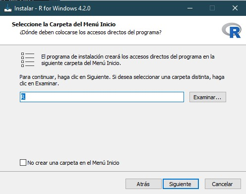
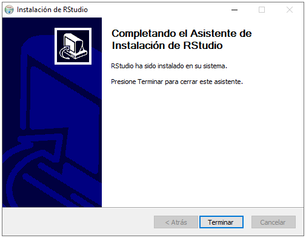
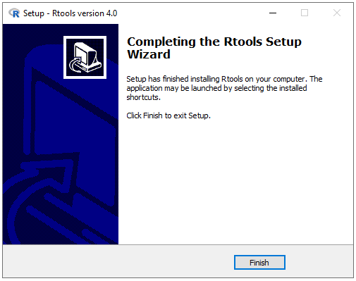

| Este manual te acompañará paso a paso en el proceso de descarga e instalación de R, RStudio y Rtools en sus versiones más recientes, además, al final encontrarás algunos videos y libros/manuales adicionales para completementar la información…Empecemos! |
1. Instalando R
Antes de instalar R(v4.2.3), debemos ir al sitio web de CRAN para descargar el programa dando click en “Download R 4.2.3 for Windows”.
Una vez descargado el programa, el primer paso es escoger el idioma del asistente de instalación de R.

Escogido el idioma, para el segundo paso simplemente debemos dar click en “siguiente”.

En la siguiente ventana, el tercer paso consiste en elegir en qué carpeta se instalará R y sus dependencias. Si tenemos permisos de administrador en nuestro dispositivo, podemos dejar que R se instale en la carpeta por defecto (“program files”); sin embargo, si esto no es así (por ejemplo si no es nuestro dispositivo o compartimos su uso mediante distintos usuarios), lo más recomendable es elegir otra ubicación, por ejemplo “documentos”. Esto nos evitará problemas de accesos o permisos durante nuestra práctica diaria con R.

A continuación, el cuarto paso consiste simplemente en dar click en “siguiente”.

En el quinto paso, nos preguntará si deseamos utilizar las opciones de configuración, recomendamos marcar “sí”.

Luego, para el sexto paso seleccionamos MDI y damos click en “siguiente”.

En el séptimo paso elegimos ayuda HTML y damos click en “siguiente”.

Como octavo paso, en las siguientes dos ventanas daremos click en “siguiente”, lo cual iniciará la instalación de R en nuestro dispositivo y, una vez termine, concluimos dando click en “finalizar”.


| Si has llegado hasta aquí, ya deberías tener instalado R! Sin embargo, nosotros no trabajaremos con R directamente, mejor aún, utilizaremos su IDE más famoso y potente: RStudio. Pero primero debemos instalarlo… Vamos a ello! |

2. Instalando RStudio
Al igual que en la sección anterior, para instalar la versión 2023.03.0+386 de nuestro IDE, primero vamos a la página oficial de Rstudio y damos click en “download RStudio Desktop for Windows”.
Una vez descargado el programa, iniciamos el asistente de instalación dando click en “Siguiente”.

En la siguiente ventana nos preguntarán en qué carpeta deseamos instalar nuestro RStudio. Aquí es importante tener las mismas consideraciones que mencionamos en la primera sección: Si no tenemos acceso de administrador, es mejor escoger “Documentos”, de lo contrario, simplemente damos click en “siguiente” en esta ventana e “instalar” en la siguiente.


Terminado el proceso de instalación, cerramos el asistente dando click en “Terminar”.

| Casi listo! Por último, necesitamos un soporte que nos permita instalar y utilizar paquetes en cualquier versión (CRAN, development version, etc). Así es, nos referimos a RTools… Terminemos el proceso! |
| Dato importante: Esto solo es necesario para Windows :) |

3. Instalando Rtools
Por último, vamos a descargar Rtools 4.0 dando click en “rtools40-x86_64.exe”.
Una vez descargado, iniciamos el asistente de instalación dando click en “next” en las siguientes dos ventanas.


A continuación, iniciamos la instalación dando click en “install” y esperamos a que el proceso se complete. Finalmente, cerramos el asistente dando click en “finish”.


Si hemos realizado el proceso correctamente, podremos abrir nuestro RStudio y llegar a esta pantalla:

4. Sobre MAC y Linux
Para la instalación de R y Rstudio en otros sistemas operativos, como macOS y Linux, vamos a la página oficial de R project, damos click en nuestro sistema operativo y seguimos las mismas indicaciones.
IMPORTANTE: En estos sistemas operativos no es necesario instalar Rtools, solo es necesario para Windows.
5. Recursos adicionales
Videos de youtube recomendados:
Manuales disponibles en la web:
- Manual de Alessio Bocco
- Manual de Giorgio Boccardo Bosoni y Felipe Ruiz Bruzzone
- Manual del libro “Hands-On Programming with R”
- Manual de Antoine Soetewey
___
Manual elaborado por:
Anthony Romero Cerdán (anthony.romeromh@gmail.com)
La versión original de este manual fue tomada del manual elaborado para InkaStats Academy
___